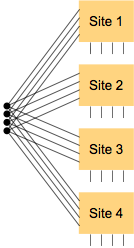
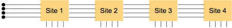
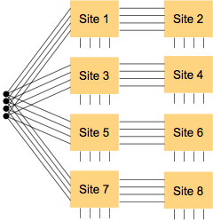

Driver sharing connections
There are several ways to connect a single driving pin to multiple devices (DUTs):
- Via separate lines to the DUT contacts (forming a "Y" connection in case of by-2 sharing)

- Via a single line that connects all the DUT contacts (a daisy-chain connection)

- Via a combination of both methods, so-called hybrid sharing, in which several daisy chains
are connected to one driving pin in a Y shape (or fan shape, if one pin drives more than two
daisy chains)

SmarTest supports both an theoretically unlimited number of devices per daisy chain and an unlimited number of chains connected in a Y or fan shape. (Of course, there will be practical limits imposed by signal degradation, timing issues, and board layout constraints. These limits vary between applications.)
Different driver pins for the same device can use different types of sharing connections.
Connecting devices with shared lines influences the setup of levels and timings that are used to test the device according to the device specs. Also, the open end of a daisy chain requires you to choose a termination method that has the least influence on the device's operation.
Functional changes
- Introduced before SmarTest 6.3.2
- MTP 3.0.1: Support for Y and hybrid sharing